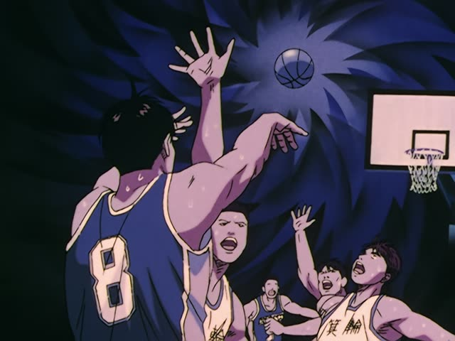
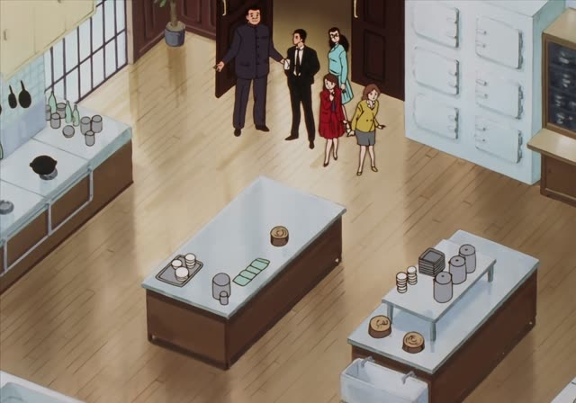
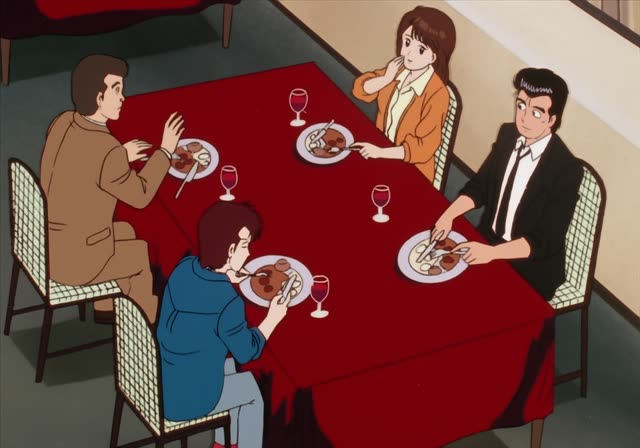
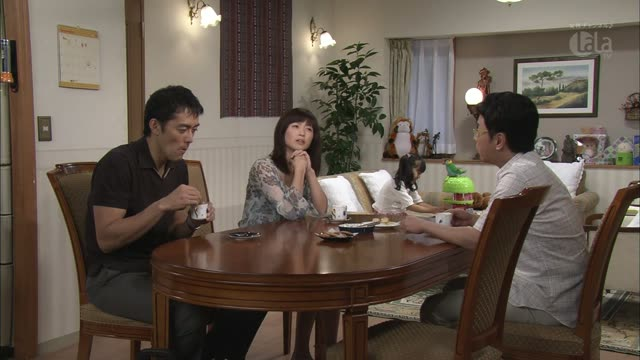
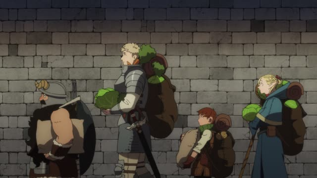
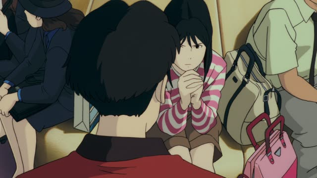

～ことがある
| Polite | ～ことがあります |
|---|---|
| Casual | ～ことがある |
Same meaning: "sometimes, there are times when". Only the politeness changes. ことも is also common.
1 Litre of Tears · Episode 9
肺炎のような合併症を引き起こすこともあります。
"It can sometimes lead to complications like pneumonia."
Plain verb + ことがある means "sometimes, there are times when". It's not every time, but it happens. ことも ある is the same, with "also".
On this card, a doctor warns Aya's family: even a cold can sometimes turn into pneumonia. あります makes it polite.
Not the same as past + ことがある (行ったことがある), which means "have done before". That one is its own page.

Slam Dunk · Episode 96
今でもあの死闘を夢で見ることがある。
"Sometimes I still see that fight in my dreams."
On this card, an old rival remembers a final. 見ることがある: not every night, but it happens.
Quick Examples
Talking about your commute.
たまに電車が遅れることがあります。
"Sometimes the train is late."
PoliteYour friend asks if you cook.
週末は作ることもあるよ。
"On weekends I sometimes cook."
CasualA note at work.
この機械は止まることがあります。
"This machine sometimes stops."
PoliteCompared with the past form.
日本に行ったことがある。
"I've been to Japan." Experience, not "sometimes".
Past + ことがある: a different meaning.
CasualWith and without
電車が遅れる。
"The train is late." Always?
電車が遅れることがある。
"Sometimes the train is late."
Examples from Media

Oishinbo · Episode 13
一度に２００人もお客さんを招くこともありますからね。
"We sometimes host as many as 200 guests at once."

Oishinbo · Episode 44
え？骨だけ輸入することがあるんですか？
"What? You sometimes import just the bones?"
Kekkon Dekinai Otoko · Episode 10
成人病で立ちくらみが出ることもありますし
"With lifestyle diseases, dizzy spells can happen too"

Kekkon Dekinai Otoko · Episode 10
胸が痛くなることがあるの。
"My chest sometimes hurts."

Dungeon Meshi · Episode 4
無人販売所を立てて売ることもある。
"Sometimes I set up an unmanned stand and sell."
Brush Up Life · Episode 1
シャツを破られることもあるので
"Because your shirt can get torn"
At a city office counter.

Ocean Waves
貧血起こして寝込むこともあるのよ。
"Sometimes I get anemic and end up in bed."
Brush Up Life · Episode 7
たまに思うことがある。
"Sometimes I think about it."